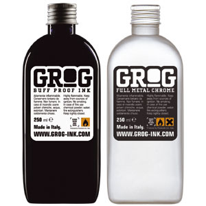

Grog
 De: La Frikipedia, la enciclopedia extremadamente seria.
De: La Frikipedia, la enciclopedia extremadamente seria.
El Grog es una bebida hecha de agua caliente azucarada mezclada con un licor si quieres morir metele coñac y 5 miligramos de coca generalmente ron.Suele tener algun aromatizante como por ejemplo Limon o gas moztaza...
 Grog de diseño, para el bucanero moderno
Elaboracion
- Añadirles tres cucharadas de
cocaina azucar y media cucharilla de especias con pimienta, clavo, canela y cocaina al gustonuez moscada. Mezclar con las claras y las oscuras?.
- Disponer cuatro jarras de porcelana de ocho onzas de capacidad y poner en cada una de ellas dos cucharadas de la mezcla.
- Añadir a cada jarra media copa de brandy caliente, una copa de ron oscuro
o claro si quieres ...existe ron claro? también caliente y completar su capacidad con agua hirviendo, leche o café.
- Revolver y espolvorear con ralladuras de nuez moscada.
También se prepara de la siguiente manera (ración para 4 personas):
- Tres cucharadas de azúcar
- Media cucharilla de especias con pimienta
- Clavo, canela y nuez moscada
- Media copa de brandy
- copa de ron oscuro
- Agua, leche o café nuez moscada. Mezclar con las claras.
- Disponer cuatro jarras de porcelana de ocho onzas de capacidad y poner en cada una de ellas dos cucharadas de la mezcla.
- Añadir a cada jarra media copa de brandy caliente, una copa de ron oscuro también caliente y completar su capacidad con agua hirviendo, leche o café.
- Revolver y espolvorear con ralladuras de nuez moscada.
- Un litro de acido sulfurico medio litro de gasolina jabon aguado 50 gramos de coca
coca cola no ahhh! seria demasiado dañino! y medio litro de kerosene y ...Listo! ya tienes tu super coctel molotov fusionado con napalm cocainero!.
Historia
Fue inventada por la marina Si , esa que esta muy buena como forma de reducir el consumo de ron por parte de los marineros malditos borrachines!, siendo parte de la ración diaria hasta 1970.
Fue la bebida favorita de los maringeros británicos durante años. Las versiones actuales incluyen ron con agua caliente azucarada con zumo de limón. Puede beberse caliente, o preferiblemente frío o con cocaina!.
De hecho, el adjetivo grogui (de groggie), viene del estado en quedaban los que abusaban del grog.
Se quedaban Grrroooooooggg...
El grog en el videojuego Monkey Island
Los piratas del videojuego "The Secret of Monkey Island" tomaban grog. En el juego, el grog es la bebida preferida de todo pirata de este mundo, formada por gran cantidad de ingredientes muy dispares, y muy corrosiva. Tanto es así que puede corroer las jarras de metal donde es servido, por lo que hay que tomarlo directamente de un barril u otro recipiente. Su fórmula contiene uno o más de los siguientes ingredientes:
- Gasolina
- Jalea
- Alcohol
- Jugo de limón
- Acetona
- Ácido para baterías
- Ácido sulfúrico
- Endulzantes artificiales
- Glicol propílico
- Grasa para ejes
- Peperoni
- Pirosulfito potásico E 224
- Especia melange
- Un pollo de goma con polea
- Orín de mono tití
- Siete tipos distintos de semen animal
- Queroseno
- Ron
- SCUMM
- Tinte rojo nº 2
- Cola de mono
- Aluminato de calcio
- Ácido acetil-salicílico
- Diversos chismes vudu
- Aloe Vera
- Pene de medusa
- Medio Bonobús
- Ojo de tritón
- Diente de niño
- Salsa agridulce
- Acido desoxirribonucleíco
- Sangre de Zombi
- Cilantro
- Pelo púvico de Hulk Hogan
- Jugo de pimientos de Padrón
- A mi
- Piedras asadas
- Vino Casón Histórico
- Cocaina...mentira este lo puse yo!
Como se pueden dar cuenta era utilizado para beber tanto como para fabricacion de bombas nucleares.Que interesante!
El grog en el MMORPG Skyrates
El grog y la coca es uno de los elementos con los que se puede comerciar entre skylands en este juego online. Es un bien relativamente difícil de encontrar y se paga muy bien en las zonas de escasez.
Enlaces externos
Conclusion
- El Grog es una buena bebida tanto para beber
como para mezclar con coca como para la fabricacion de bombas nucleares.
- El que escribio esto es un drogadicto.
- La mayoria del articulo fue
copiadopedido prestado sin concimiento de la wikipedia.
Autor(es):
- Krusher
- Nexo
- Manchado
- Onvre kulto
- Meloh
- N4uj
- Seymour M
- Guilfer
- Breken
- Drakas negro
Frikipedia 2005-2016, Licencia
GFDL 1.2 - Extraído por FrikiLeaks